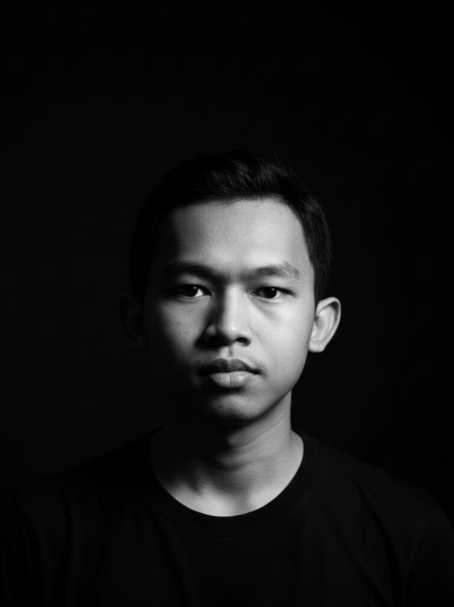

Halo! Saya Muhamad Faris Abdillah, pengembang perangkat lunak yang berfokus pada pembuatan solusi digital yang inovatif, efisien, dan berdampak.
Saya adalah mahasiswa Teknik Informatika di Universitas Islam Negeri K.H Abdurrahman Wahid Pekalongan. Saya memiliki minat besar dalam pengembangan aplikasi web dan keamanan siber.
Ketertarikan saya terhadap dunia teknologi dimulai sejak bangku SMA melalui eksplorasi mendalam di bidang frontend dan backend. Bagi saya, memperkuat literasi teknologi merupakan langkah strategis agar kita tidak hanya menjadi penonton, tetapi mampu bergerak selaras dengan arus inovasi global.

Alat tempur yang saya gunakan.
Sedikit contoh proyek yang saya buat.
Aplikasi sistem penghitunga kasir warung makan menggunakan bahasa pemrograman C++.
Tampilan website yang dibuat menggunakan bahasa pemrograman PHP dengan sistem CRUD.